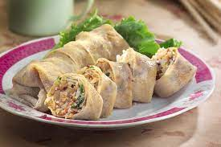

Odin Recipes

Description
Popiah, also known as Fresh Spring Rolls, is a delightful dish featuring soft spring roll wrappers filled with a variety of fresh vegetables, tofu, and a flavorful hoisin sauce.
Ingredients
- 8 spring roll wrappers
- 200g jicama (yambean), julienned
- 150g carrots, julienned
- 100g bean sprouts
- 100g tofu, sliced
- Hoisin sauce
- Crushed peanuts
- Lettuce leaves
Steps
- Soften spring roll wrappers according to package instructions.
- Lay a wrapper flat, spread hoisin sauce, add lettuce, tofu, jicama, carrots, and bean sprouts.
- Fold sides and roll tightly. Repeat for remaining ingredients.
- Sprinkle crushed peanuts on top.
- Serve with extra hoisin sauce for dipping.
Click here for home page